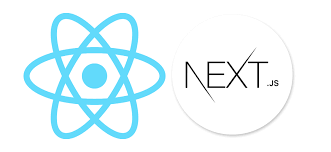

![Gambar Next.js]()
Next.js adalah sebuah framework berbasis React yang dikembangkan oleh Vercel dan dirilis pertama kali pada tahun 2016. Framework ini dirancang untuk memudahkan pengembangan aplikasi web modern dengan menyediakan berbagai fitur bawaan yang tidak tersedia secara langsung di React biasa. Next.js menggunakan JavaScript
atau TypeScript
sebagai bahasa pemrograman utamanya, dan dibangun di atas Node.js sebagai runtime environment-nya. Keunggulan utama Next.js terletak pada kemampuannya menggabungkan pengembangan sisi klien
frontend dan sisi server
backend dalam satu proyek yang terintegrasi, sehingga developer tidak perlu membangun dua aplikasi terpisah hanya untuk menangani kedua sisi tersebut.
Dari sisi frontend, Next.js memperluas kemampuan React dengan menambahkan fitur-fitur yang sangat penting untuk pengalaman pengguna yang optimal. Salah satu fitur andalannya adalah Server-Side Rendering SSR, di mana halaman HTML di-render di server sebelum dikirim ke browser pengguna, sehingga halaman dapat tampil lebih cepat dan lebih ramah terhadap mesin pencari SEO. Selain SSR, Next.js juga mendukung Static Site Generation (SSG) yang memungkinkan halaman di-generate pada saat build time, cocok untuk konten yang jarang berubah seperti blog
atau landing page
. Next.js juga memiliki sistem routing berbasis file system yang intuitif, di mana setiap file yang dibuat di dalam folder pages atau app secara otomatis menjadi sebuah route tanpa perlu konfigurasi tambahan.
Dari sisi backend, Next.js menyediakan fitur API Routes yang memungkinkan developer membuat endpoint API langsung di dalam proyek Next.js tanpa memerlukan server terpisah seperti Express.js. Setiap file yang dibuat di dalam folder pages/api atau menggunakan Route Handlers di folder app/api akan otomatis menjadi sebuah REST API endpoint yang dapat menerima request HTTP seperti GET
, POST
, PUT
, dan DELETE
. Fitur ini sangat berguna untuk menangani logika bisnis seperti autentikasi pengguna, koneksi ke dokumentasi, hingga integrasi dengan layanan pihak ketiga. Dengan hadirnya fitur Server Actions pada Next.js versi terbaru, developer bahkan bisa menjalankan fungsi server-side
langsung dari komponen React tanpa harus membuat API endpoint secara eksplisit.

Secara keseluruhan, Next.js hadir sebagai solusi full-stack yang komprehensif
dan efisien
bagi para developer modern. Dengan menggabungkan kemampuan frontend yang kaya fitur seperti SSR, SSG, dan optimasi gambar otomatis, sekaligus kemampuan backend melalui API Routes dan Server Actions, Next.js memungkinkan tim pengembang untuk bekerja lebih produktif dalam satu ekosistem yang terpadu. Framework ini juga didukung oleh komunitas yang besar dan dokumentasi yang lengkap, menjadikannya salah satu pilihan utama dalam membangun aplikasi web skala kecil hingga enterprise
. Tidak heran jika banyak perusahaan teknologi besar seperti TikTok, Twitch, dan Notion menggunakan Next.js sebagai fondasi aplikasi web mereka.